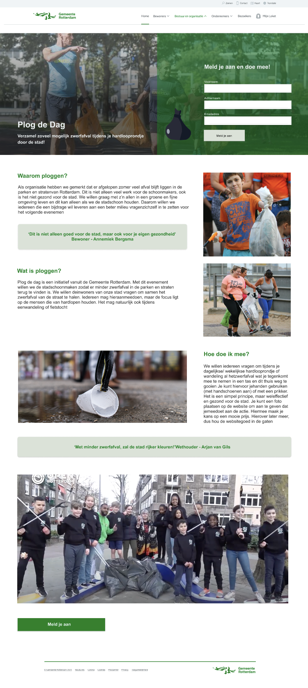
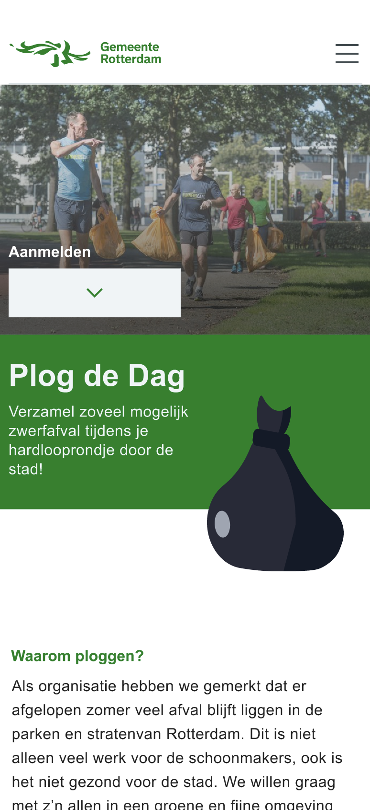
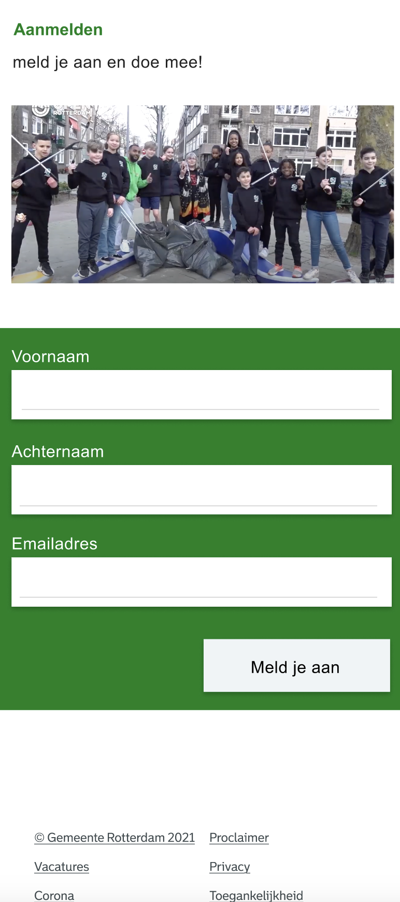

hidden
General information
01/10/2023
Subject: UX/UI Design
Grade: 7,5
Used programmes: Figma
Challenge
The city of Rotterdam wants to draw the attention of citizens to the litter problem in the city increase involvement. The Plog de Dag campaign was initiated for this purpose, with which Rotterdam residents become involved called upon to participate in a sporting clean-up campaign. Plogging is a fairly new term that stands for cleaning up litter while running. The municipality of Rotterdam wants to launch a one-page website that contributes to informing and activating of Rotterdammers. The website offers the option to register and be informed via social media to stay. All this to reach the largest possible target group.
Results
- 
- 
- 